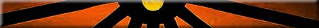
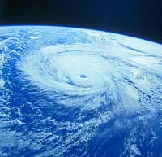
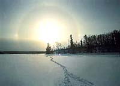
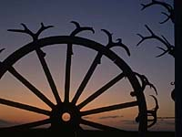

 The existence of life in any ecosystem depends upon a flow of energy and a cycling of material. Energy is required by all living organisms in order to grow, maintain life and reproduce. Almost all energy utilized in the forest can be traced back to sunlight. One way of looking at the interactions in forest communities is by examining food chains and food webs and this transfer of energy. The dependence of plants (autotrophs) and animals (heterotrophs) on each other for food makes up a food chain. A food chain shows the direct transfer of energy from one source to another. |
- The sun transfers energy in the form of light to green plants
(producers).
- The energy of the food stored in a plant is transferred to a plant eating
animal (first order consumer or herbivore) when it eats the plant.
- Second and third order consumers (organisms that feed on the plant
eaters) aare known as carnivores. These are classified as predators, parasites or
scavengers) continue the transfer if energy. As energy moves down the food chain, it is either lost or utilized by the organism. Thus, the higher the organism "sits" in the food chain, the more it must consume in order to survive.
- Decomposers (like bacteria, fungi, molds) are the consumer group that
return carbon in the dead organisms to the environment. This is achieved by
breaking down the bodies or organic matter into simpler substances.
- Omnivores fit into either the first or second order consumer category since their diets include both plants and animals. Most humans are omnivores.
Example:
| * wolf * * * * caribou * * * * * * * * * mosses and lichens * * * * * * | (carnivore) (herbivore) (producer) |
 In most natural situations, the flow of food material is more complicated than in a simple food chain. Many animals eat a number of different foods, depending on their abundance and availability. When many different species of plants and animals are interdependent, we speak of food webs rather than food chains. Nature works to keep a balance within the food web. The total number of organisms in food webs vary, depending on location or type of ecosystem, temperatures or seasons of the year, precipitation amounts and other factors. |
Food webs seldom go beyond three or four consumers levels. Why?

The answer lies in what happens to the energy as it is transferred
along the pathway of the web. Since sunlight is the major energy
source, about 8 percent of the sun's energy that reaches
the earth actually strikes plants (the other 92 percent is either
reflected back into space or goes into heating the land and water).
Much of the 8 percent striking the plant is reflected or transmitted
through the plant. The plant utilizes about 2 percent of the
energy that reaches its surface. Photosynthetic activity
in the plant converts light energy
to chemical energy. About 85 percent of this is used up by the
plant in its daily living processes and the remainder is lost
as heat. Only 10-15 percent of the energy is stored in the tissues,
capable of being passed onto other organisms. After a few consumers,
it is easy to see that the energy available would be too small
for the consumer organism to survive. |
Design a Food Web (Activity)
- Given the following organisms, choose at least fifteen and
develop your own interrelationship web. Feel free to add more
to the list.
- Draw arrows (to represent the transfer of energy) from the
organisms that is food for the next organism.
- Your finished product will resemble a web. (Check out the
interrelationship web)
- The possibilities are endless! One rule, be sure to have at least three autotrophs (plants) and three decomposers.
| Autotrophs (plants) | moss, lichen, fern, legumes, fireweed, wild raspberry, wild strawberry, saskatoon, willow, jack pine, shrub, white spruce, tamarack, aspen, birch, green ash, blueberry, grass, soil algae |
| Herbivores (plant eaters) | squirrel, mouse, moose, woodland caribou, snowshoe hare, beaver |
| Omnivores (plant and meat eaters) | ovenbird, silver fox, black bear |
| Carnivores (meat eaters) | mite, centipede, turkey vulture, timber wolf, burrowing owl, red tailed hawk, pileated woodpecker |
| Decomposers | fungus, mushroom, earthworm, ant, millipede, sowbug, soil bacteria |